The crew only comes back if its creatures had +1/+1 counters when they died and Marchesa saw those deaths. Establish a sacrifice outlet and a reliable counter source before committing to a big theft turn.
This is a mixed fictional street-crew and heist theme: eight cards keep their original Magic or official crossover characters, and the other 57 nonland cards have custom GTA character assignments below. Every custom art brief explicitly includes a visible character, even for mana rocks and spells. Lands are exempt.
The import file keeps the real Magic card names and rules. The casting sheet is a complete reskin plan, not rendered proxy artwork. What the import file does carry is a real printing for 52 cards, written as a set code and collector number after the name, so Tabletop Simulator loads the official art closest to each brief. The catalog pages still show each card's default image. Custom nicknames and pictures do not change colors, types, abilities, mana values, names used by game rules or commander identity. Token rules also stay unchanged.
CJ leads the crew
The original underworld cast
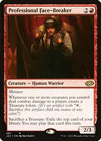
Professional Face-Breaker

Original Magic character: New Capenna's professional enforcer. Keep a character-focused original printing; combat connections produce Treasure and Treasure becomes impulsive card access.
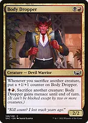
Body Dropper
Original Magic character: New Capenna's enforcer. Sacrificing other creatures grows it, and its paid sacrifice ability supplies an additional outlet.
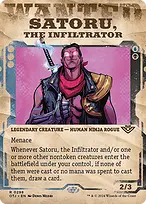
Satoru, the Infiltrator
Original Magic character: Satoru, the infiltrator. Keep his own artwork; Marchesa's returning creatures become fresh cards.
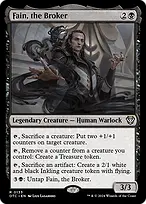
Fain, the BrokerOriginal Magic character: Fain, the dealmaker. He converts crew members into counters, counters into Treasure, or artifacts into an evasive token.
The custom cast and character scenes
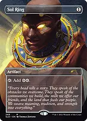
+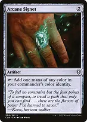
Sol Ring + Arcane SignetSol Ring: CJ; nickname "CJ's Gold Chain"; art shows CJ prominently wearing a gold chain. Arcane Signet: Sweet Johnson; nickname "Grove Street Colors"; art shows Sweet visibly handing the crew its colors.
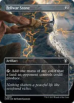
+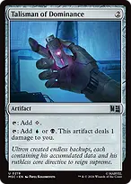
Fellwar Stone + Talisman of DominanceFellwar Stone: Cesar Vialpando; nickname "Cesar's Garage"; art shows Cesar working beside an open car hood. Talisman of Dominance: Lester Crest; nickname "Lester's Burner Phone"; art shows Lester holding a phone over a marked street map.
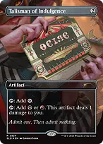
+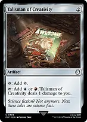
Talisman of Indulgence + Talisman of CreativityTalisman of Indulgence: Trevor Philips; nickname "Trevor's Stash"; art shows Trevor opening a case of cash. Talisman of Creativity: Franklin Clinton; nickname "Franklin's Side Hustle"; art shows Franklin planning a job beside his car.
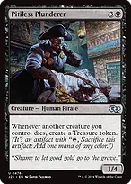
+
Pitiless Plunderer + Warren SoultraderPitiless Plunderer: Wu Zi Mu (Woozie); nickname "Woozie, Casino Operator"; art shows Woozie overseeing the take in a casino office. Warren Soultrader: Big Smoke; nickname "Big Smoke, Backroom Dealer"; art shows Big Smoke making a deal across a cash-covered desk.
 +
+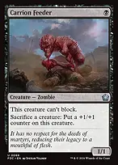
Viscera Seer + Carrion FeederViscera Seer: Lester Crest; nickname "Lester, the Planner"; art shows Lester studying the crew's next target. Carrion Feeder: Lamar Davis; nickname "Lamar, Always in Trouble"; art shows Lamar grinning as the crew regroups.
 +
+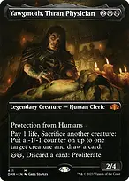
Goblin Bombardment + Yawgmoth, Thran PhysicianGoblin Bombardment: Trevor Philips; nickname "Trevor's Last Resort"; art shows Trevor leading a chaotic fictional getaway. Yawgmoth, Thran Physician: Officer Tenpenny; nickname "Tenpenny, Corrupt Enforcer"; art shows Tenpenny interrogating a contact in a dim office.
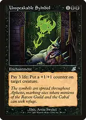
+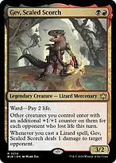
Unspeakable Symbol + Gev, Scaled ScorchUnspeakable Symbol: Sweet Johnson; nickname "Sweet's Loyalty Test"; art shows Sweet presenting a symbol of crew membership. Gev, Scaled Scorch: Sweet Johnson; nickname "Sweet, Grove Street Captain"; art shows Sweet gathering the crew before a confrontation.
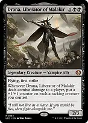
+
Drana, Liberator of Malakir + Uncivil UnrestDrana, Liberator of Malakir: Cesar Vialpando; nickname "Cesar, Ride Together"; art shows Cesar leading friends through a nighttime street. Uncivil Unrest: CJ and Sweet; nickname "Grove Street Reunion"; art shows CJ and Sweet rallying their reunited crew.
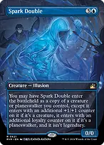
+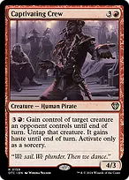
Spark Double + Captivating CrewSpark Double: Franklin Clinton; nickname "Franklin, the Next Generation"; art shows Franklin stepping forward beside CJ. Captivating Crew: Catalina; nickname "Catalina's Armed Persuasion"; art shows Catalina directing a reluctant accomplice.
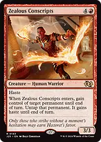
+
Zealous Conscripts + Samut, Hazoret's ChampionZealous Conscripts: Lance Vance; nickname "Lance, Switching Sides"; art shows Lance joining a rival crew in a tense street meeting. Samut, Hazoret's Champion: Ryder; nickname "Ryder, Move It!"; art shows Ryder waving the crew toward a getaway car.
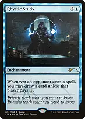
+
Rhystic Study + Black Market ConnectionsRhystic Study: Lester Crest; nickname "Lester's Surveillance Room"; art shows Lester in the foreground watching a wall of monitors. Black Market Connections: Big Smoke; nickname "Big Smoke's Backroom Deals"; art shows Big Smoke exchanging information with underworld contacts.
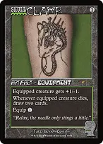
+
Skullclamp + Grim HaruspexSkullclamp: Franklin Clinton; nickname "Franklin's Hard Lessons"; art shows Franklin reviewing what went wrong after a job. Grim Haruspex: OG Loc; nickname "OG Loc, Taking Notes"; art shows OG Loc recording the crew's latest story.
 +
+
Braids, Arisen Nightmare + Danny PinkBraids, Arisen Nightmare: Catalina; nickname "Catalina's Demands"; art shows Catalina demanding a share of the take. Danny Pink: Michael De Santa; nickname "Michael, Teaching the Crew"; art shows Michael explaining a plan to younger accomplices.
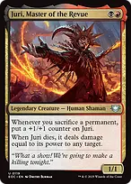
+
Juri, Master of the Revue + Zulaport CutthroatJuri, Master of the Revue: Trevor Philips; nickname "Trevor, Escalating the Situation"; art shows Trevor standing amid the aftermath of a fictional job. Zulaport Cutthroat: Tommy Vercetti; nickname "Tommy, Collecting Debts"; art shows Tommy collecting a payment in a back office.
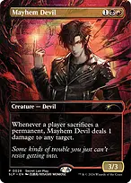
+
Mayhem Devil + Gray Merchant of AsphodelMayhem Devil: Ryder; nickname "Ryder's Bad Idea"; art shows Ryder grinning while a plan goes sideways. Gray Merchant of Asphodel: Woozie; nickname "Woozie, Collecting the Take"; art shows Woozie visibly counting the proceeds of a casino job.
 +
+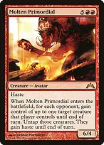
Herald of Secret Streams + Molten PrimordialHerald of Secret Streams: Lester Crest; nickname "Lester, Security Offline"; art shows Lester opening a route for the crew from his control desk. Molten Primordial: CJ; nickname "CJ, Taking Back the Block"; art shows CJ at the head of a large street confrontation.
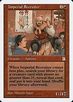
+
Imperial Recruiter + Demonic TutorImperial Recruiter: Sweet Johnson; nickname "Sweet, Assembling the Crew"; art shows Sweet inviting several familiar allies to a meeting. Demonic Tutor: Lester Crest; nickname "Lester's Master Plan"; art shows Lester pointing to the crucial detail on a planning board.
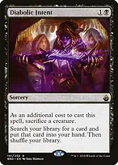
+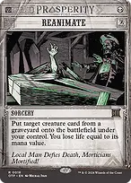
Diabolic Intent + ReanimateDiabolic Intent: Big Smoke; nickname "Big Smoke's Double-Cross"; art shows Big Smoke making a secret deal away from the crew. Reanimate: CJ; nickname "CJ's Hospital Respawn"; art shows CJ walking back out of a hospital ready to continue.
 +
+
Victimize + Cyclonic RiftVictimize: Franklin Clinton; nickname "Franklin's Rescue Job"; art shows Franklin bringing two allies back to safety. Cyclonic Rift: Trevor Philips; nickname "Trevor's Citywide Diversion"; art shows Trevor in the foreground as rivals scatter from a chaotic diversion.
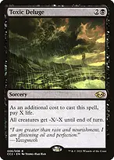
+
Toxic Deluge + Feed the SwarmToxic Deluge: Officer Tenpenny; nickname "Tenpenny's Crackdown"; art shows Tenpenny directing a fictional citywide operation. Feed the Swarm: Catalina; nickname "Catalina Settles the Score"; art shows Catalina confronting an enemy across a table.
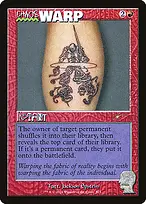
+
Chaos Warp + Swan SongChaos Warp: Trevor Philips; nickname "Trevor Changes the Plan"; art shows Trevor abruptly overturning a carefully drawn plan. Swan Song: Lamar Davis; nickname "Lamar's Distraction"; art shows Lamar visibly distracting a guard during a job.
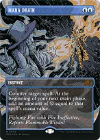
+
Mana Drain + Deflecting SwatMana Drain: Lester Crest; nickname "Lester Reroutes the Funds"; art shows Lester redirecting a transaction from his laptop. Deflecting Swat: Franklin Clinton; nickname "Franklin's Last-Second Swerve"; art shows Franklin clearly visible at the wheel during an evasive turn.
 +
+
Deadly Rollick + Malakir Rebirth // Malakir MireDeadly Rollick: Claude; nickname "Claude's Quiet Exit"; art shows Claude leaving a completed fictional job unnoticed. Malakir Rebirth: CJ; nickname "CJ, Back on the Block"; art shows CJ returning to his neighborhood after a setback.
 +
+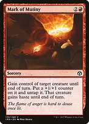
Sink into Stupor // Soporific Springs + Mark of MutinySink into Stupor: OG Loc; nickname "OG Loc Takes the Mic"; art shows OG Loc in the foreground performing into a microphone. Mark of Mutiny: Lance Vance; nickname "Lance's New Allegiance"; art shows Lance receiving the colors of a different crew.
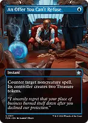
+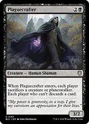
An Offer You Can't Refuse + PlaguecrafterAn Offer You Can't Refuse: Tommy Vercetti; nickname "Tommy Makes an Offer"; art shows Tommy presenting terms to a rival at a desk. Plaguecrafter: Officer Tenpenny; nickname "Tenpenny's Shakedown"; art shows Tenpenny confronting a group of contacts.
 +
+
Soul-Guide Lantern + Agent of TreacherySoul-Guide Lantern: Lester Crest; nickname "Lester Wipes the Records"; art shows Lester visibly deleting a file from a computer. Agent of Treachery: Big Smoke; nickname "Big Smoke, Bought and Paid For"; art shows Big Smoke accepting payment for a betrayal.
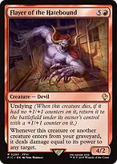
+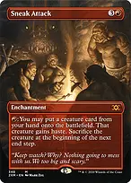
Flayer of the Hatebound + Sneak AttackFlayer of the Hatebound: Niko Bellic; nickname "Niko, Unfinished Business"; art shows Niko returning to confront an old enemy. Sneak Attack: Franklin and Lamar; nickname "Franklin and Lamar's Surprise Visit"; art shows Franklin and Lamar arriving together on an unexpected job.
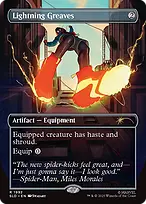
+
Lightning Greaves + Living DeathLightning Greaves: CJ; nickname "CJ's Fresh Kicks"; art shows CJ lacing his sneakers before joining the crew. Living Death: CJ and Sweet; nickname "The Whole Crew Respawns"; art shows CJ and Sweet greeting the returning crew in a deliberately game-like scene.
The art the import file pins
No official card shows CJ or Franklin, so these are the nearest real printings: a street, a deal, a hood or a heist where one exists. Forty-six were picked for the theme; six more are pinned to their plain original art so they do not load as an unrelated crossover.
Sol Ring
(SLD) 249: a man wearing a broad gold collar, the closest official art to CJ's Gold Chain.
An Offer You Can't Refuse(FDN) 311: a boss in an armchair making his offer across a desk.
Lightning Greaves(SLD) 1992: red sneakers on a city street, for CJ's Fresh Kicks.
Pitiless Plunderer
(J25) 476: a captain counting the take in a back room.
Imperial Recruiter(PTK) 113: a recruiter addressing a crowd at a notice board.
Rhystic Study(J18) 7: a hooded planner over a map table, for Lester.
Arcane Signet(CLB) 298: a green signet ring on a hand. Grove Street's colour is green.
+
Satoru, the Infiltrator + Dack Faydenwanted-poster frames, (OTJ) 298 and (SLD) 1689.
+
Mana Drain + Reanimatenewspaper front pages from the Breaking News sheet, (OTP) 67 and (OTP) 18.
+
Skullclamp + Chaos Warptattoo art on skin, (SLD) 1663 and (SLD) 823.
Keep the crew returning
+
Unspeakable Symbol + Marchesa, the Black Rosepay three life to put a counter on a creature before it dies, including Marchesa herself. This works without attacking and can lower your life total enough to enable dethrone. Save life for removal and future activations rather than putting counters on everything automatically.
+ Gev, Scaled Scorch + Zulaport Cutthroatdrain each opponent before creatures enter so Gev supplies three counters in a four-player game. Life lost on an earlier turn does not count. Gev does not give itself counters, and the life loss must happen before the entrance.
+ Drana, Liberator of Malakir + Danny PinkDrana connecting during first-strike damage puts counters on all your attackers before normal damage. Danny draws for each creature's first counter-placement event that turn, including appropriate enters-with-counters events while his ability applies.
++ Viscera Seer + Carrion Feeder + Goblin Bombardmentfree, repeatable sacrifice outlets convert targeted removal or a borrowed creature into value. Sacrifice before the end step begins if you want Marchesa to return that creature during that end step. Carrion Feeder cannot block.
+
Spark Double + Marchesa, the Black Rosemake a nonlegendary second Marchesa with a counter already on it, protecting the engine's continuity. Two Marchesas give two dethrone abilities, but their death triggers cannot return the same card twice. A returning Double can choose a fresh copy target.
If Marchesa and counter-bearing creatures die together, her ability still sees their deaths. Leave Marchesa in the graveyard when relying on its own return trigger; moving it to the command zone prevents that return. Exile, bounce and graveyard removal evade the basic engine. Tokens cannot return after leaving the battlefield.
Recruit the other side
++ Mark of Mutiny + Goblin Bombardment + Marchesa, the Black RoseMark both steals a creature and puts the needed counter on it. Attack if useful, then sacrifice it while you still control it. Marchesa returns the card under your control without the original theft effect's expiration; an opposing commander may escape through its owner's command-zone choice.
+
Captivating Crew + Unspeakable Symbolsteal at sorcery speed, then add a counter without relying on combat. Zealous Conscripts and Molten Primordial offer entrance-based versions; borrowed creatures with no counter will not return through Marchesa.
With Agent of Treachery and Marchesa, the Black Rose, reuse the Agent's entrance to take important nonland permanents. Its three-card draw needs three permanents you do not own already under your control when your end step begins; an Agent or third stolen permanent returning later that end step does not retroactively establish the trigger.
Soul-Guide Lantern provides graveyard interaction that leaves your theft engine intact. Once a stolen card is in its owner's graveyard awaiting Marchesa, avoid exiling that graveyard yourself. Graveyard exile aimed at that card can break the delayed return.
Cash out and finish
+
Professional Face-Breaker + Grim Hirelingattacking several players can produce Treasure from each connection, while dethrone only rewards attacks at the highest-life player. Choose between maximum income and reliable counters rather than assuming every attacker receives both.
+ Warren Soultrader + Pitiless Plundereran eligible creature sacrificed to Soultrader costs one life and produces two Treasures with Plunderer present. This is finite unless another effect supplies more creatures; Marchesa returns them at a later end step, not immediately.
+ Juri, Master of the Revue + Uncivil Unrestsacrifices grow Juri, and dying converts its last power into damage. With a +1/+1 counter, Unrest doubles that creature damage. Unrest also gives nontoken creatures a choice of a counter or haste on entry; choose the counter when recursion is the priority.
+ Herald of Secret Streams + Uncivil Unrestcounter-bearing attackers become unblockable and deal double damage, creating a clear combat finish. Herald does not grant haste, and removing it before blockers can reopen blocking.
+ Gray Merchant of Asphodel + Marchesa, the Black Roserepeat Merchant entrances to drain all opponents and recover the life spent on your engine. A large life gain can turn off dethrone by putting you alone at the highest life total, so retain another counter source.
Flayer of the Hatebound
your creatures returning directly from YOUR graveyard become targeted damage. A stolen creature returning from its owner's graveyard does not qualify. Living Death returns creatures from exile, so its returns do not trigger Flayer.
+ Satoru, the Infiltrator + Grim Haruspexdying nontoken creatures draw through Haruspex, and uncast returns draw through Satoru. Separate Marchesa return triggers usually generate separate draws; multiple creatures entering together through Living Death produce one Satoru trigger.
+
Sneak Attack + Marchesa, the Black Roseput a powerful entrance creature onto the battlefield for one red, then give it a counter and sacrifice it before the end step starts. If you wait for Sneak Attack's end-step sacrifice, Marchesa cannot return it until the following end step. Braids sacrificing a creature during the end step has the same delay.
Find the missing role and survive interaction
→ Imperial Recruiter → Viscera Seerfind a cheap free outlet when the engine has counters but cannot sacrifice on demand. Recruiter uses power two or less, not toughness.
→ Imperial Recruiter → Herald of Secret Streamsfind the combat finisher when a counter-bearing army is being stalled by blockers. Recruiter can also find Agent of Treachery for a slower value line, but does not pay the Agent's seven-mana cost.
+ Demonic Tutor + Diabolic Intentprioritize a missing counter source, sacrifice outlet, or answer before searching for another expensive threat. Intent sacrifices a creature as a cost; use one that is already set up to return.
++ Reanimate + Victimize + Living Deathbackup recursion after disruption. Reanimate costs life based on mana value. Victimize requires two graveyard targets and sacrifices as it resolves. Living Death also rebuilds opponents, so inspect every graveyard and use Lantern before committing.
++ Cyclonic Rift + Toxic Deluge + Plaguecrafterthree different resets: Rift clears opposing nonlands, Deluge uses toughness reduction, and Plaguecrafter forces sacrifices. Deluge also kills your own creatures and costs life; the counter/recursion engine can make that a favorable exchange.
+++ Swan Song + Mana Drain + An Offer You Can't Refuse + Deflecting Swatprotect the engine from exile and graveyard disruption or stop an opposing win. Offer gives away two Treasures. Swat changes targets and does not stop an untargeted sweeper.
Feed the Swarm + Chaos Warp + Deadly Rollick + Sink into Stupor // Soporific Springsanswer troublesome permanents outside combat. Feed costs life; Sink normally delays a spell or permanent instead of disposing of it. Lightning Greaves also grants shroud, which stops your own Symbol and other targeted counter abilities until you move the Equipment.
Opening hands and sequencing
Keep two or three usable mana sources, early acceleration or a cheap creature, and either a counter source or draw engine. The list has 35 lands plus two spell/land cards; nine fetchlands, original duals, shocks and multiplayer duals establish all three colors. Four basics remain for simple fetch targets and opponents' basic-land search effects.
Develop mana and an outlet, then Marchesa and counters. Do not run your commander into removal with no way to put a counter on it. Black Market Connections and Symbol deliberately spend life, but do not spend yourself into range of an easy attack.
Before a theft turn, confirm that the target can receive a counter and that you can sacrifice it before control expires. Sacrifice returned creatures on a later turn when the timing pays off; repeated end-step returns are a grind engine, not an infinite loop.
The deck normally wins through repeated drains, a large Juri hit or unblockable doubled attacks after a developed board. The character theme takes priority over a maximum-speed combo list, and the guide preserves the real card rules even when a custom picture depicts a different species or role.